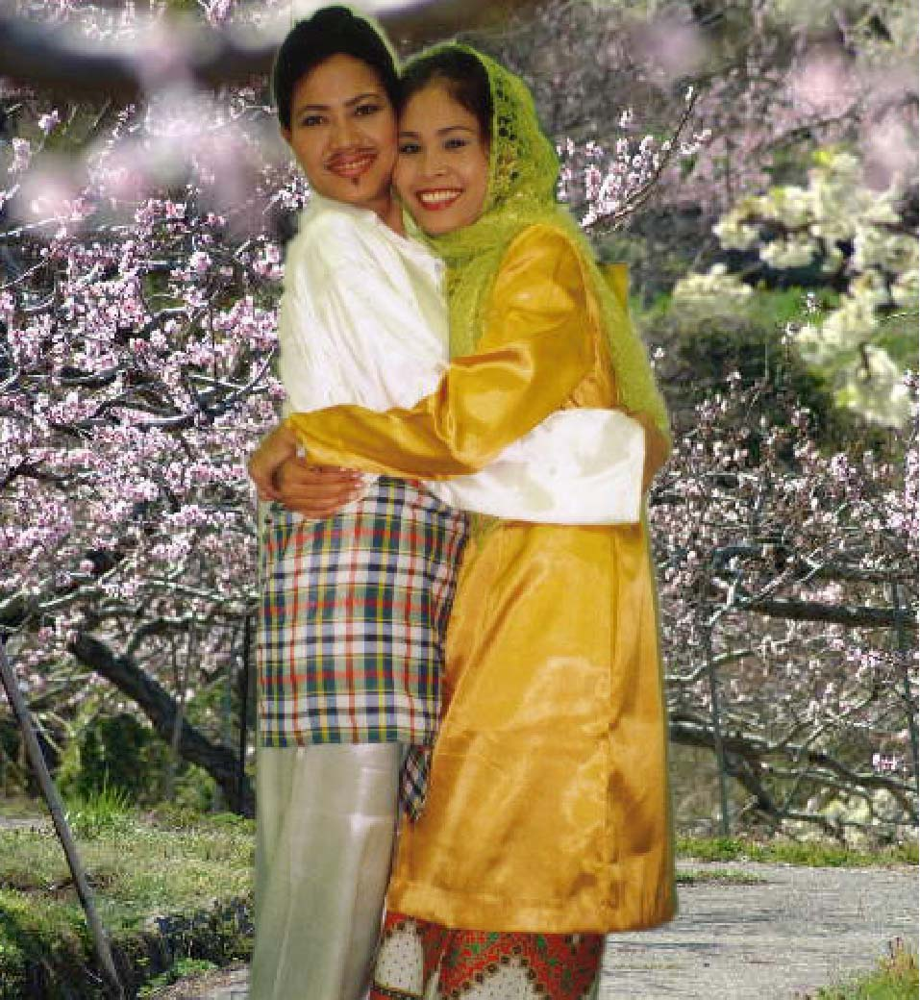

－久郷ポンナレット－
－久郷ポンナレット－
|
私は現在、各地の教育機関や援助機関などから講演の依頼を頂いております。 戦争体験を通して、戦争の悲惨さとおろかさ、平和のありがたさと大切さ、命の尊さなどについて皆さんに語りかけております。 そしてカンボジア文化である伝統舞踊にも力を入れております。 現在は、カンボジア出身である伊東クリスナーさんと共に、各地で舞踊公演も行っております。 ここで、アンコール王朝で栄えた代表的な古典舞踊である「ロバム・チュンポー」を一曲ご紹介致します。 ロバムとは、ダンスという意味です。 そしてチュンポーとは、祝福という意味です。 この踊りは、国の記念式典やお祝い行事、外国からの大切なお客様をお迎えする時などにも踊ります。 花びらをまくのが、この踊りの特徴です。 ゆったりとしたカンボジアの古典音楽をどうぞご堪能ください。 |
伊東クリシュナさん(左)と、久郷ポンナレット(右) |
|
「カン・サィン・スエナ（愛のスカーフ）」 美しい娘のスカーフに込められた愛の呪文。 うっかりそれに触れてしまった若者。 やがて､恋に落ちていく二人．．．。 （カンボジアの明るい文化を伝えるためなら、私は”おひげ”でも生やせます？！） |
 |